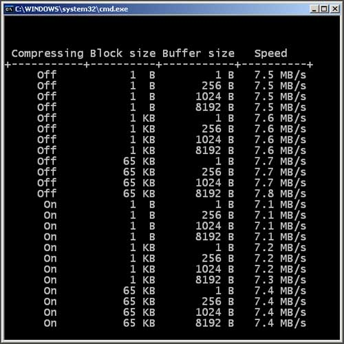

Coded data transfer in java

--------- RenewableStreamExample.java ----------
import java.util.*;
import java.util.concurrent.*;
import java.util.zip.*;
import java.io.*;
import java.net.*;
import java.security.*;
import java.security.spec.*;
import javax.crypto.*;
import javax.crypto.spec.*;
import java.nio.charset.*;
public class RenewableStreamExample {
boolean debug = true;
String host = "127.0.0.1";
int port = 502;
int serverMaxConnections = 3;
String asymmetricKeyAlgorithm = "RSA/ECB/PKCS1Padding";
String secretKeyAlgorithm = "AES/ECB/PKCS5Padding";
String hashAlgorithm = "SHA-1";
volatile Thread serverThread;
volatile ExecutorService executorService;
volatile Map<Runnable, Socket> map;
volatile ServerSocket serverSocket;
public static void main(String[] args) throws Exception { new RenewableStreamExample(); }
RenewableStreamExample() throws Exception {
startServer();
for (int i = 0; i < 1; i++) startClient(i);
Thread.sleep(5_000);
while (map.size() > 0) Thread.sleep(1_000);
stopServer();
}
void startServer() {
serverThread = new Thread(() -> {
try {
if (debug) System.out.println("Start server");
KeyPairGenerator kpg = KeyPairGenerator.getInstance(asymmetricKeyAlgorithm.split("/")[0]);
kpg.initialize(512);
KeyPair keyPair = kpg.genKeyPair();
Key publicKey = keyPair.getPublic();
Key privateKey = keyPair.getPrivate();
map = Collections.synchronizedMap(new HashMap<>());
executorService = Executors.newCachedThreadPool((runnable) -> {
Thread thread = new Thread(runnable);
//thread.setDaemon(true);
return thread;
});
serverSocket = new ServerSocket(port);
try {
while (!Thread.currentThread().isInterrupted()) {
Socket socket = serverSocket.accept();
executorService.submit(() -> {
synchronized (serverThread) {
if (map.size() >= serverMaxConnections) {
try { socket.close(); } catch (Exception e) { }
if (debug) System.out.println("Server connection " + map.size() + " reject: " + socket.toString());
return;
}
map.put(Thread.currentThread(), socket);
}
if (debug) System.out.println("Server connection " + map.size() + " accept: " + socket.toString());
OutputStream cos, dos, os = null;
InputStream cis, iis, is = null;
try {
socket.setSoTimeout(60_000);
is = socket.getInputStream();
os = socket.getOutputStream();
RenwInputStream ris = new RenwInputStream(is);
RenwOutputStream ros = new RenwOutputStream(os);
ros.write(publicKey.getEncoded());
ros.close();
Cipher cipher = Cipher.getInstance(asymmetricKeyAlgorithm);
cipher.init(Cipher.DECRYPT_MODE, privateKey);
byte[] secretKeyBytes = cipher.doFinal(readAllBytes(ris));
ris.renew();
cipher = null;
SecretKey secretKey = new SecretKeySpec(secretKeyBytes, secretKeyAlgorithm.split("/")[0]);
secretKeyBytes = null;
Cipher encryptCipher = Cipher.getInstance(secretKeyAlgorithm);
encryptCipher.init(Cipher.ENCRYPT_MODE, secretKey);
Cipher decryptCipher = Cipher.getInstance(secretKeyAlgorithm);
decryptCipher.init(Cipher.DECRYPT_MODE, secretKey);
String username = new String(decryptCipher.doFinal(readAllBytes(ris)), StandardCharsets.UTF_8);
//System.out.println(username);
ris.renew();
boolean okPass = Arrays.equals(decryptCipher.doFinal(readAllBytes(ris)), MessageDigest.getInstance(hashAlgorithm).digest("password".getBytes(StandardCharsets.UTF_8)));
ris.renew();
boolean compressing = (decryptCipher.doFinal(readAllBytes(ris))[0] != 0);
ris.renew();
ros.write(encryptCipher.doFinal(new byte[] {(byte)(okPass ? 1 : 0), (byte)(compressing ? 1 : 0)}));
ros.close();
if (!okPass) throw new IOException("password is incorrect");
Deflater deflater = null;
Inflater inflater = null;
if (compressing) {
deflater = new Deflater();
inflater = new Inflater();
}
byte[] buffer = new byte[1024];
int len;
while (!Thread.currentThread().isInterrupted()) {
cis = new CipherInputStream(ris, decryptCipher);
cos = new CipherOutputStream(ros, encryptCipher);
if (compressing) {
inflater.reset();
deflater.reset();
iis = new InflaterInputStream(cis, inflater);
dos = new DeflaterOutputStream(cos, deflater);
} else {
iis = cis;
dos = cos;
}
while ((len = iis.read(buffer)) >= 0) {
dos.write(buffer, 0, len);
}
ris.renew();
iis.close();
dos.close();
}
} catch (Exception e) {
if (debug) System.out.println("Server connection " + e);
}
if (is != null) try { is.close(); } catch (Exception e) { }
if (os != null) try { os.close(); } catch (Exception e) { }
if (socket != null && !socket.isClosed()) try { socket.close(); } catch (Exception e) { }
map.remove(Thread.currentThread());
if (debug) System.out.println("Server connection close: " + socket.toString());
});
}
} catch (Exception e) {
if (debug) System.out.println("Server " + e);
}
} catch (Exception e) {
e.printStackTrace();
}
});
//serverThread.setDaemon(true);
serverThread.start();
}
public void stopServer() {
if (debug) System.out.println("Stop server");
int timeout = 10_000;
serverThread.interrupt();
executorService.shutdownNow();
for (int c = 0, step = 500; c < timeout && map.size() > 0; c += step) {
try { Thread.sleep(step); } catch (Exception e) { }
}
map.forEach((thread, socket) -> {
try { socket.getInputStream().close(); } catch (Exception e) { }
try { socket.getOutputStream().close(); } catch (Exception e) { }
try { socket.close(); } catch (Exception e) { }
});
if (serverSocket != null && !serverSocket.isClosed()) {
try { serverSocket.close(); } catch (Exception e) { }
if (debug) System.out.println("Server close");
}
}
void startClient(int n) {
Thread clientThread = new Thread(() -> {
if (debug) System.out.println("Start client " + Thread.currentThread().getName());
Socket socket = null;
OutputStream cos, dos, os = null;
InputStream cis, iis, is = null;
try {
String username = "username", password = "password";
KeyGenerator keyGenerator = KeyGenerator.getInstance(secretKeyAlgorithm.split("/")[0]);
keyGenerator.init(128);
SecretKey secretKey = keyGenerator.generateKey();
Cipher encryptCipher = Cipher.getInstance(secretKeyAlgorithm);
encryptCipher.init(Cipher.ENCRYPT_MODE, secretKey);
Cipher decryptCipher = Cipher.getInstance(secretKeyAlgorithm);
decryptCipher.init(Cipher.DECRYPT_MODE, secretKey);
socket = new Socket(host, port);
socket.setSoTimeout(10_000);
os = socket.getOutputStream();
is = socket.getInputStream();
RenwOutputStream ros = new RenwOutputStream(os);
RenwInputStream ris = new RenwInputStream(is);
byte[] publicKeyBytes = readAllBytes(ris);
ris.renew();
Key publicKey = KeyFactory.getInstance(asymmetricKeyAlgorithm.split("/")[0]).generatePublic(new X509EncodedKeySpec(publicKeyBytes));
publicKeyBytes = null;
Cipher cipher = Cipher.getInstance(asymmetricKeyAlgorithm);
cipher.init(Cipher.ENCRYPT_MODE, publicKey);
ros.write(cipher.doFinal(secretKey.getEncoded()));
ros.close();
cipher = null;
ros.write(encryptCipher.doFinal(username.getBytes(StandardCharsets.UTF_8)));
ros.close();
ros.write(encryptCipher.doFinal(MessageDigest.getInstance(hashAlgorithm).digest(password.getBytes(StandardCharsets.UTF_8))));
ros.close();
boolean compressing = true;
ros.write(encryptCipher.doFinal(new byte[] {(byte)(compressing ? 1 : 0)}));
ros.close();
byte[] statusBytes = decryptCipher.doFinal(readAllBytes(ris));
ris.renew();
boolean okPass = (statusBytes[0] != 0);
compressing = (statusBytes[1] != 0);
if (!okPass) throw new IOException("password is incorrect");
System.out.println("compressing: " + (compressing ? "On": "Off"));
byte[] bt1 = new byte[65_000];
byte[] bt2 = new byte[bt1.length];
socket.setReceiveBufferSize((int)(bt1.length * 1.2)); // SocketOptions.SO_RCVBUF
socket.setSendBufferSize((int)(bt1.length * 1.2)); // SocketOptions.SO_SNDBUF
for (int i = 0; i < bt1.length; i++)
//bt1[i] = 0;
//bt1[i] = (byte)(i & 0xFF);
bt1[i] = (byte)(Math.random() * 256);
Deflater deflater = null;
Inflater inflater = null;
if (compressing) {
deflater = new Deflater();
inflater = new Inflater();
}
long now = System.currentTimeMillis();
byte[] buffer = new byte[1024];
int i = 0;
for (; i < 160; i++) {
cos = new CipherOutputStream(ros, encryptCipher);
cis = new CipherInputStream(ris, decryptCipher);
if (compressing) {
deflater.reset();
inflater.reset();
dos = new DeflaterOutputStream(cos, deflater);
iis = new InflaterInputStream(cis, inflater);
} else {
dos = cos;
iis = cis;
}
dos.write(bt1);
dos.close();
int len, destPos = 0;
while ((len = iis.read(buffer)) >= 0) {
System.arraycopy(buffer, 0, bt2, destPos, len);
destPos += len;
}
System.out.print("*");
if (!Arrays.equals(bt1, bt2)) System.out.println("ERROR");
ris.renew();
iis.close();
}
//System.out.println("Elapsed: " + (System.currentTimeMillis() - now) + " ms");
System.out.printf("Speed: %.2f MB/s%n", 2 * i * bt1.length / (float)((System.currentTimeMillis() - now) * 1_000));
} catch (Exception e) {
if (debug) System.out.println("Client " + e);
}
if (os != null) try { os.close(); } catch (Exception e) { }
if (is != null) try { is.close(); } catch (Exception e) { }
if (socket != null && !socket.isClosed()) try { socket.close(); } catch (Exception e) { }
if (debug) System.out.println("Client " + Thread.currentThread().getName() + " close");
});
clientThread.setName("" + n);
//clientThread.setDaemon(true);
clientThread.start();
}
public byte[] readAllBytes(InputStream in) throws IOException { //in.readAllBytes()
ByteArrayOutputStream baos = new ByteArrayOutputStream();
transferTo(in, baos);
return baos.toByteArray();
}
public long transferTo(InputStream in, OutputStream out) throws IOException { // in.transferTo(out)
long transferred = 0;
byte[] buffer = new byte[32];
int read;
while ((read = in.read(buffer)) >= 0) {
out.write(buffer, 0, read);
transferred += read;
}
out.flush();
return transferred;
}
public class RenwInputStream extends InputStream {
private InputStream in;
private byte[] buffer = new byte[127];
private int pos = 0, length = 0;
private boolean more = true;
public RenwInputStream(InputStream in) {
this.in = in;
}
@Override
public int read() throws IOException {
if (pos < 0 || (pos >= length && end())) return -1;
return buffer[pos++] & 0xFF;
}
@Override
public int read(byte bt[], int off, int len) throws IOException {
if ((off | len | (off + len) | (bt.length - (off + len))) < 0) throw new IndexOutOfBoundsException();
if (pos < 0) return -1;
if (len == 0) return 0;
if (pos >= length && end()) return -1;
int i = 0;
for (int count, li; i < len ;) {
if (pos >= length && end()) break;
count = length - pos;
li = len - i;
if (count > li) count = li;
System.arraycopy(buffer, pos, bt, off + i, count);
pos += count;
i += count;
}
return i;
}
private boolean end() throws IOException {
pos = length = 0;
if (more) {
int c = in.read();
if (c == -1) throw new IOException("EOS");
more = (c & 0x80) != 0; //0x80 = 1000 0000
int ln = c & 0x7F; //0x7F = 0111 1111
if (ln > 0) {
int l;
while ((l = in.read(buffer, length, ln - length)) != -1) {
length += l;
if (length >= ln) break;
//try { Thread.sleep(10); } catch (Exception e) { Thread.currentThread().interrupt(); }
}
}
}
if (length == 0) {
more = true;
pos = -1;
return true;
}
return false;
}
public void renew() {
pos = 0;
}
} // End class RenwInputStream
public class RenwOutputStream extends OutputStream {
private OutputStream out;
private byte buffer[];
private int pos = 0;
public RenwOutputStream(OutputStream out, int size) {
if (size < 1 || size > 127) throw new IllegalArgumentException("buffer size is " + size + ", should be 1-127");
this.out = out;
this.buffer = new byte[size];
}
public RenwOutputStream(OutputStream out) {
this(out, 127);
}
@Override
public void write(int b) throws IOException {
if (pos >= buffer.length) flushBuffer(true);
buffer[pos++] = (byte)b;
}
@Override
public void write(byte bt[], int off, int len) throws IOException {
if ((off | len | (off + len) | (bt.length - (off + len))) < 0) throw new IndexOutOfBoundsException();
for (int count, li, i = 0; i < len;) {
if (pos >= buffer.length) flushBuffer(true);
count = buffer.length - pos;
li = len - i;
if (count > li) count = li;
System.arraycopy(bt, off + i, buffer, pos, count);
pos += count;
i += count;
}
}
private void flushBuffer(boolean more) throws IOException {
out.write(more ? pos | 0x80 : pos); //0x80 = 1000 0000
if (pos > 0) out.write(buffer, 0, pos);
pos = 0;
}
@Override
public void close() throws IOException {
flushBuffer(false);
out.flush();
}
} // End class RenwOutputStream
}